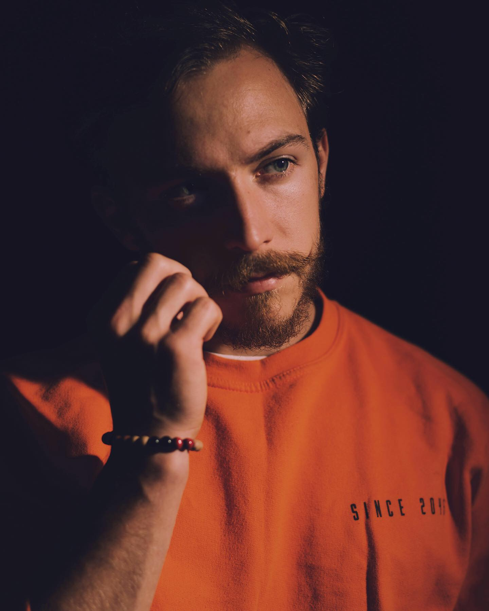
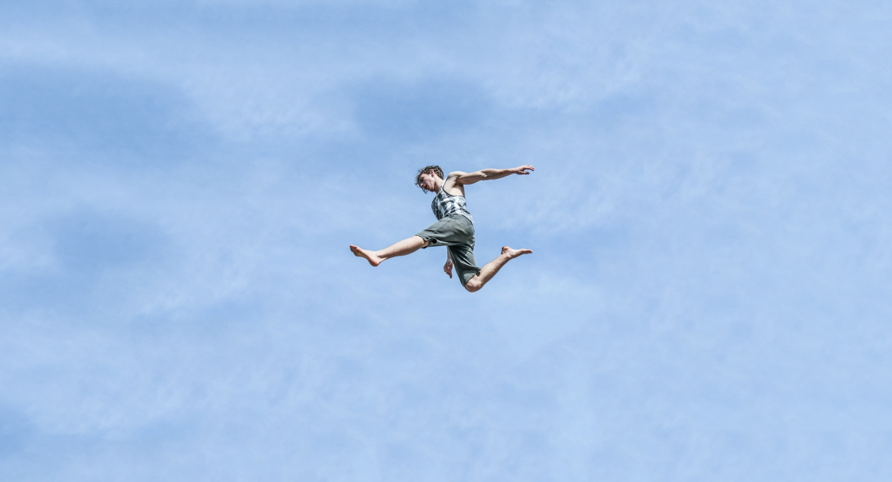
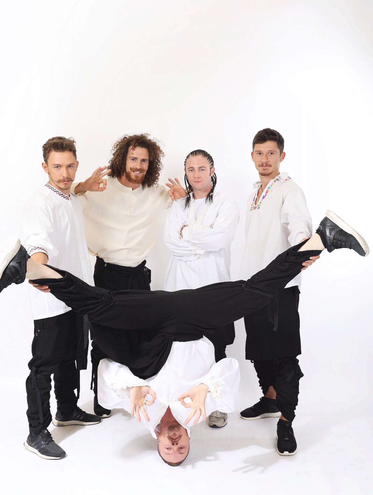
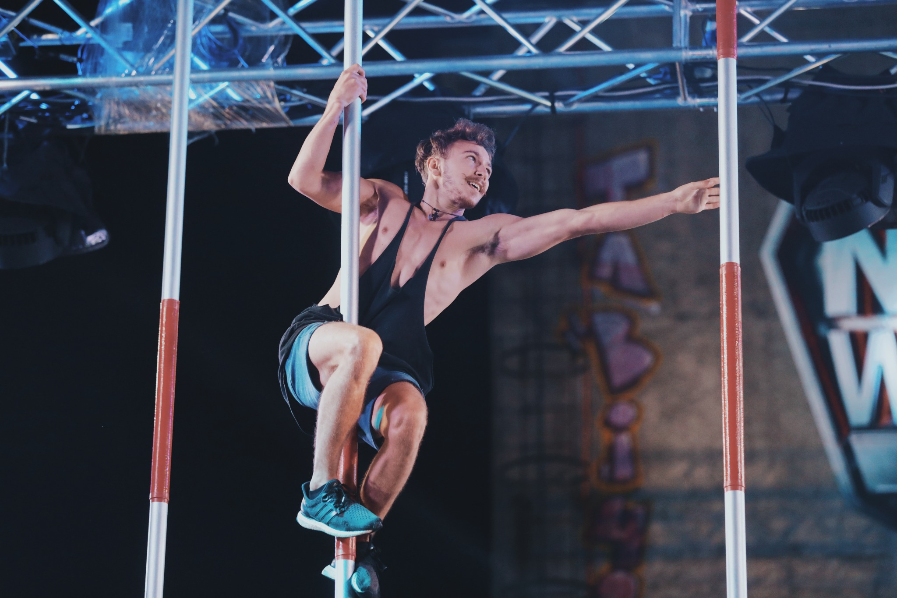

FEATURE FILM / 2024
WICKED
Parkour, stunts and acting · Universal Pictures
10OSCAR
NOMINATIONS
NOMINATIONS
2OSCAR
WINS
WINS
2025 SAG AWARDSStunt Ensemble Nominee · Bogdan Pascal officially listed
From the streets to the screen. A professional parkour athlete and stunt performer bringing distinctive movement to film, television, global campaigns and live stages.


From Hollywood productions to televised competitions and international performance stages.


I've spent over 20 years developing movement and more than a decade bringing it to stages, sets and screens. I know how a sequence feels to perform, how movement reads through a lens and how to turn an ambitious idea into physical, camera-ready action.
I bring that experience to parkour coordination: specialist movement design, a far-reaching network of athletes and performers, and practical collaboration with the people responsible for bringing a production to life.
LET'S DISCUSS A SEQUENCEWhen a production demands movement beyond a standard sequence, specialist parkour experience makes a difference.
The enormous practical library set featured three rotating wheel sections and shifting ladders. The production brought in specialist parkour performers for the challenging tornado-wheel sequence. I was part of that team, applying balance, timing and split-second reactions to movement on a constantly changing surface.
Wicked received 10 Oscar nominations and 2 wins. My name was also included in the officially listed 2025 SAG Awards stunt-ensemble nominees.
SCENE BREAKDOWN ↗From story-driven movement design to the right team and an effective on-set execution.
Creative parkour routes, rhythm, transitions and choreography shaped around the story, the performer and the camera.
STORY · ROUTES · TIMINGConnecting productions with parkour athletes, freerunners, acrobats, doubles and physical performers through my international network.
ATHLETES · DOUBLES · TEAMSSeeing architecture as a performer. Exploring surfaces, obstacles, run-ups, landings and creative possibilities with the stunt and safety teams.
RECCES · FEASIBILITY · ROUTESHelping talent develop confidence, physical vocabulary, repeatable movement and the timing needed to sell a sequence on camera.
REHEARSAL · PRECISION · CONTINUITYAs a working filmmaker, I understand framing, lenses, camera movement, coverage and editing. I design motion to read clearly on screen.
FRAMING · COVERAGE · EDITINGWorking alongside directors, stunt coordinators, camera teams and performers to develop and refine complex physical action during production.
COLLABORATION · DETAIL · DELIVERYReal physical work across film, live television, commercial projects and international performance stages.
Specialist parkour, stunt and acrobatic performance on large-scale musical productions.
FEATURE FILM / ON-SET MOVEMENTParkour, dance and acrobatics with my team on Britain's Got Talent, Romania's Got Talent and Italy's Tú Sí Que Vales.
TEAMWORK / BROADCAST PERFORMANCENamed as a freerunner for the EXTREME stadium entertainment at Twickenham, alongside other action-sport specialists.
EXTREME EVENT ANNOUNCEMENT ↗Acrobatic performance alongside Hugh Jackman in The Greatest Showman live number, plus international festivals and stadium events.
LIVE SHOWS / STAGECRAFTYears spent performing at speed and working behind the camera have given me an unusual perspective. The best movement is not simply technically impressive. It has purpose, character, rhythm and a place in the shot.
Bring me in early to explore the movement, plan its visual language and prepare the right people for the production.
Understand the story, movement ambition, references, location and camera plan.
Explore routes, rehearse physical ideas and shape camera-readable action beats.
Connect suitable athletes and prepare performances in collaboration with the appointed stunt and safety teams.
Support the people and movement on set, adjusting timing and execution for the camera.
Let's turn it into a movement sequence worth remembering. Film, television, commercials, music videos and live productions.
Film, television, commercials, live performances and international events. Search or filter the archive.
Selected brands, networks and productions associated with projects in my career portfolio.
A hybrid skill set developed through years of movement, performance and physical storytelling.
Press play to watch, and expand the video to fullscreen.
I started parkour at 11. What began as a passion for movement became a career across stages, streets and screens worldwide.
My background spans parkour and freerunning, gymnastics, trampoline, tricking, dance, climbing, high falls, acting and martial arts. This combination lets me develop movement that is physical, expressive and built for the camera or live audience.
My film credits include Wicked, where I performed alongside Ariana Grande and Cynthia Erivo as part of a specialist parkour team and was officially named among the 2025 SAG Awards stunt-ensemble nominees; Cinderella, performing alongside Camila Cabello; and Netflix's Jingle Jangle, performing alongside Forest Whitaker and Keegan-Michael Key. Beyond film, my work spans commercial campaigns, music videos, documentaries, live performances and international events.
Award-recognised productions include Wicked (10 Oscar nominations, 2 wins), Jingle Jangle (4 award wins), Cinderella (1 award win), and 13 Shades of Romanian (my parkour journey featured as one of its 13 main stories; 6 director-reported festival awards). The music video The 1975's "I'm in Love with You" was also nominated for Best Choreography at the 2023 UK Music Video Awards.
My career has also taken me to the stages of Britain's Got Talent, Romania's Got Talent, Ninja Warrior and Got to Dance. Highlights include performing alongside Chris Hemsworth in a Dubai Expo commercial and Hugh Jackman during The Greatest Showman performance at the BRIT Awards, as well as appearing at Milan Fashion Week for Philipp Plein. My commercial work also includes collaborations with globally recognised brands such as Nike, Nikon, Vodafone and Beefeater Gin.
Film, commercials, TV, live events and brand collaborations.
Based in the UK. Available for international productions.